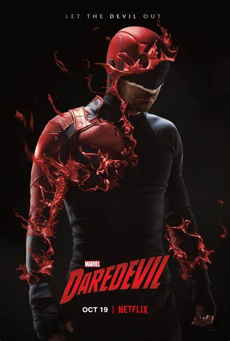
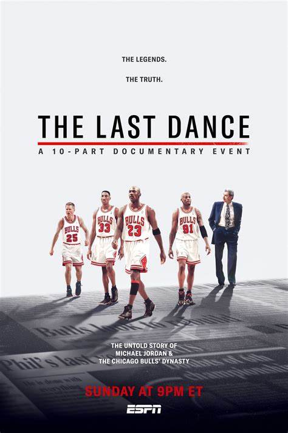

TV Shows
Breaking Bad

Genre: Crime, Drama, Thriller
Director: Vince Gilligan
Cast: Bryan Cranston, Aaron Paul, Anna Gunn, Dean Norris
Breaking Bad follows Walter White, a high school chemistry teacher diagnosed with cancer, who turns to cooking and selling methamphetamine to secure his family's future. As he partners with former student Jesse Pinkman, Walter transforms from a struggling teacher into the ruthless drug kingpin, Heisenberg. The series explores morality, power, and the consequences of his choices in an intense and gripping story.
Daredevil
Genre: Action, Crime, Drama
Director: Drew Goddard
Cast: Charlie Cox, Vincent D'Onofrio, Deborah Ann Woll, Elden Henson
Daredevil follows Matt Murdock, a blind lawyer with heightened senses, who fights crime in Hell’s Kitchen, New York, as the masked vigilante Daredevil. By day, he seeks justice in the courtroom, and by night, he battles criminals and powerful foes like Wilson Fisk. The series blends intense action, deep character development, and moral dilemmas as Matt struggles with his dual identity.
The Last Dance
Genre: Documentary, Sport
Director: Jason Hehir
Cast: Michael Jordan, Scottie Pippen, Dennis Rodman, Steve Kerr
The Last Dance is a documentary series that chronicles Michael Jordan’s legendary career, with a focus on the Chicago Bulls’ 1997-98 season—their quest for a sixth NBA championship. Featuring behind-the-scenes footage and interviews with key players, coaches, and journalists, the series explores Jordan’s leadership, rivalries, and the team’s dominance, offering an in-depth look at one of the greatest dynasties in sports history.